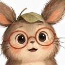

Turn sound on (top right), then try each one. Every sound is made in the browser — no files — and sits under the theme tone in loudness. Each section has variants to compare; the one marked ★ is my pick.
On the site all of this stays behind the nav's speaker button: off by default, off again after a reload.
Each row is one string, tuned to a pentatonic scale running down the list (newest highest, oldest lowest), so sweeping the pointer down plays a run that always sounds right, never a clash. A row only plucks when the pointer enters it, and no faster than every 45ms, so a fast sweep is a glissando, not a buzz. Keyboard focus plucks too. The line under each row shivers when it's played. Why: the archive is the one list on the site you browse by sweeping; the strings make that sweep feel like running a hand along it.

MossA: a soft voiced blip every second letter, pitch wandering around his note and lifting at a question mark — speech without words. B: rounded rising bubbles, cuter. C: muted key clicks, the "machine talking" reading. A chirp plays as his panel opens (first button press here). Why: he's the one character on the site; a voice gives him personality without adding motion.
Drag the line (or arrow keys). A pin clicks as the line crosses it — a brighter tone going to After, a duller one going back. Why: each click marks the moment a problem becomes its fix; you hear the point being made.
A: a quick scatter of tiny high notes as it breaks, a soft rising settle as it comes back. B: a dry grain of sand instead of notes. Why: the line claims care for the last pixel; the word answering the pointer now answers the ear too.
Drag and throw (or arrow keys). A tick as each photo crosses the middle, getting quieter and lower as the ring slows. Ticks cap at ~25 a second on a hard throw. Why: you feel the speed of your own throw, and keyboard steps get a confirmation.
A: quiet mechanical ticks that slow with the count and stop on a soft "landed" note. B: one tone that rises with the count. Numbers here are stand-ins. Why: draws the eye — and ear — to the outcome, the thing a recruiter scans for.
A latch click when it's right; a low two-note "nope" when it's wrong. Why: the result is clear even when your eyes are still on the keyboard.
Drag the wall (or arrow keys). One step for every ~220px the wall moves past you, left and right feet alternating, so a slow drag is a stroll and a fast one a brisk walk. Never faster than ~5 steps a second — a hard throw walks quickly, it doesn't run. A throw keeps walking while it coasts, the steps getting softer, and stops when the wall stops. Nothing on hover, nothing on scroll. A: wooden floorboards, a low heel–toe thud, now and then a faint creak. B: a stone gallery floor, a soft heel click with a little room around it. C: soft soles, barely there. Why: the wall is meant to be walked along; the steps turn a drag into walking past the paintings.
A soft paper pop as an answer opens, a lower one as it closes. A quiet whoosh as a photo opens large, and back as it closes. Why: confirms the thing you pressed opened, a small felt reply.
Kept silent on purpose: other hovers (removed 2026-11-13 — the archive is the one exception you asked for), the preloader (sound is always off on first load), the clock's seconds, scrolling and the playground wall.